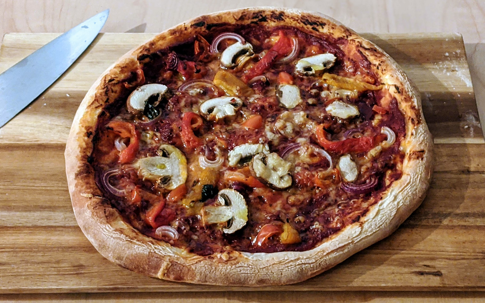

Pizza

Pour une pizza (nourrissant deux personnes maximum) :
- Une pâte à pizza
- Les deux tiers d'une petite boîte de concentré de tomates
- Une grosse cuillère à café d'origan
- Sel, poivre, sucre
- (facultatif) Un peu de basilic et/ou d'herbes de Provence
- Environ 80g de fromage râpé sans trop de goût (emmental ou mozzarella)
- Et puis bon, de la garniture, quoi.
- Mélanger le concentré de tomates avec environ 1,5 fois son volume en eau. Saler, poivrer, sucrer légèrement, ajouter l'origan et les herbes. Préchauffer le four à super fort, par exemple 250°C, avec une plaque de four vide. Si ton four a un mode spécial pizza, utiliser ça.
- Une fois qu'on a la sauce tomate, le reste est à peu près évident et dépend de ce qu'on veut mettre sur la pizza. Commencer par étaler la sauce sur la pâte, puis ajouter le fromage, refermer les côtés de la pâte pour former une croûte si tu as acheté une pâte toute faite, puis disposer la garniture.
- Enfourner (sur la plaque chaude) une dizaine de minutes pour commencer, puis une fois que la garniture semble cuire un peu, mettre un papier d'alu par-dessus et laisser la pizza cinq minutes de plus pour que la pâte puisse finir de cuire.
Remarque : cette recette est facile, rapide, et le résultat est bon. Pour obtenir un résultat vraiment excellent, comparable aux pizzas qu'on peut trouver dans une bonne pizzeria, il faut part faire sa pâte soi-même, et d'autre part la cuire dans un four adapté. Faire sa pâte soi-même fait le plus gros de la différence, et vaut la peine pour impressionner ses invités. Si on veut vraiment optimiser le processus, on peut acheter une pierre à pizza qui va rester chaude lorsque la pâte froide est disposée dessus, ce qui permet d'éviter l'histoire de rajouter du papier alu et d'obtenir une meilleure cuisson.